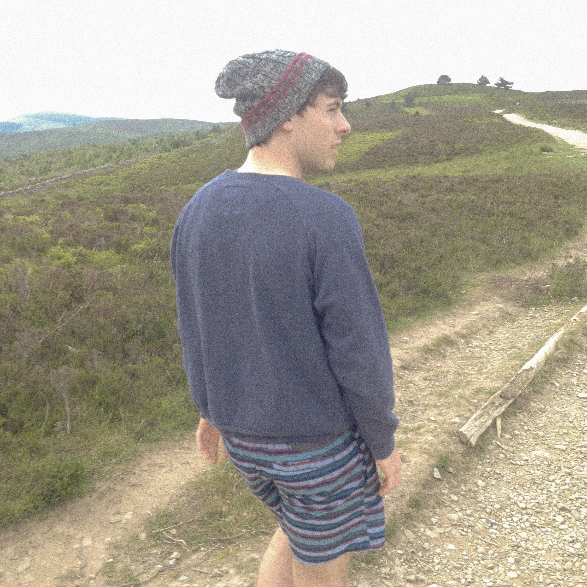

🪨
gary-martin is a sound artist, designer, and electronic musician. he is interested in systems of production and consumption, and their ecological entanglement. shaped by perspectives on new materialism, access-first design, and bad environmentalism, his social practice spans participatory art, critical making, and practice research.
for over a decade he has facilitated creative projects with young people across Wales, and partners like Cadw, The King's Trust, Shakespeare’s Globe, and Tate.
he is a Pervasive Media Studio resident and a creative producer with pyka, where he develops interactive sound tools and experiences. he is also a lecturer in the school of creative arts at the University of Gloucestershire where he manages releases on Parkland Records and his teaching focuses on critical practice in relation to networked cultures and political ecology.

he / they
grmrtn @ proton.me